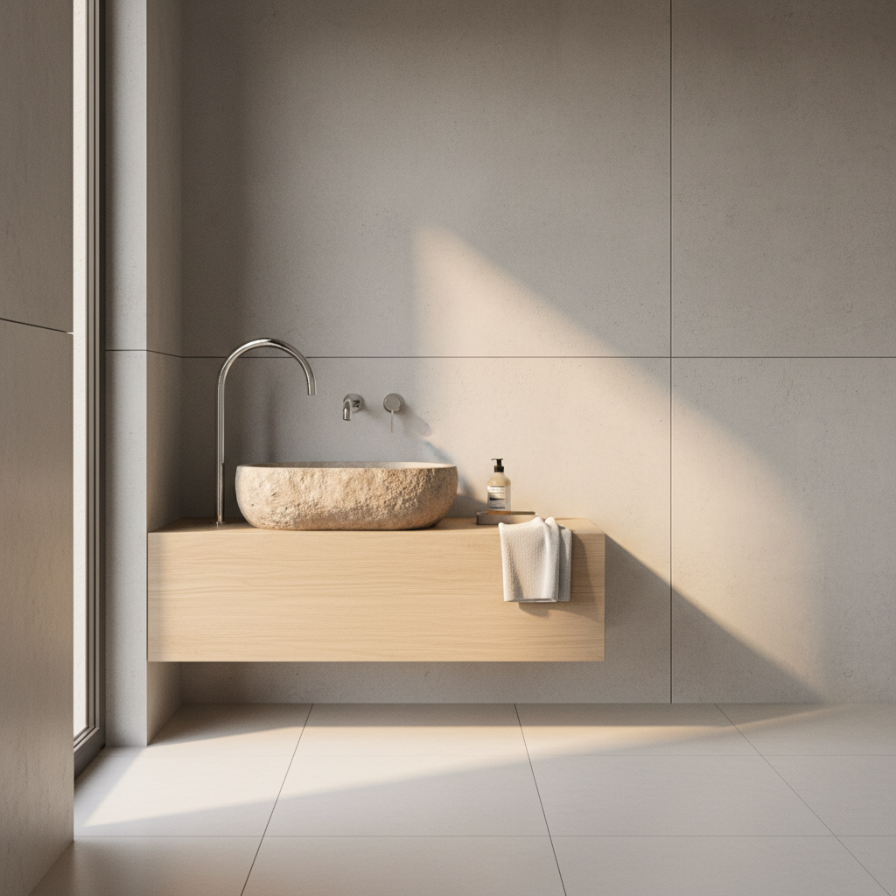
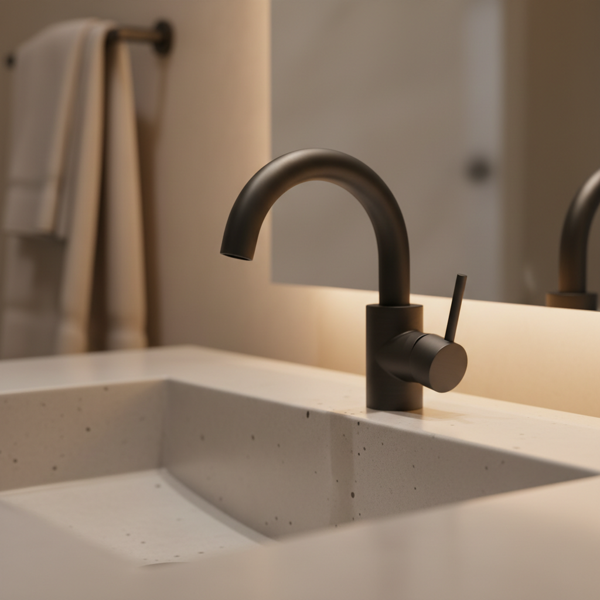

Willkommen bei Schien Service
Ihr Meisterbetrieb für Heizung & Sanitär in Leonberg
Qualität, Zuverlässigkeit und persönliche Betreuung – Ihr Partner für moderne Haustechnik.
Leistungen
Kompetenz in Wärme und Wasser
Wir bieten ein breites Spektrum an Dienstleistungen rund um Ihre Haustechnik. Von der modernen Heizungsanlage bis zum Traumbad – wir sind für Sie da.
Heizungstechnik
Installation, Wartung und Reparatur moderner und effizienter Heizsysteme für wohlige Wärme.
Mehr erfahren

Sanitärinstallation
Von der Badsanierung bis zur Installation einzelner Komponenten – für Funktionalität und Design.
Mehr erfahrenNotdienst
Bei Rohrbruch und anderen Notfällen sind wir schnell und zuverlässig für Sie in Leonberg zur Stelle.
Jetzt anrufen